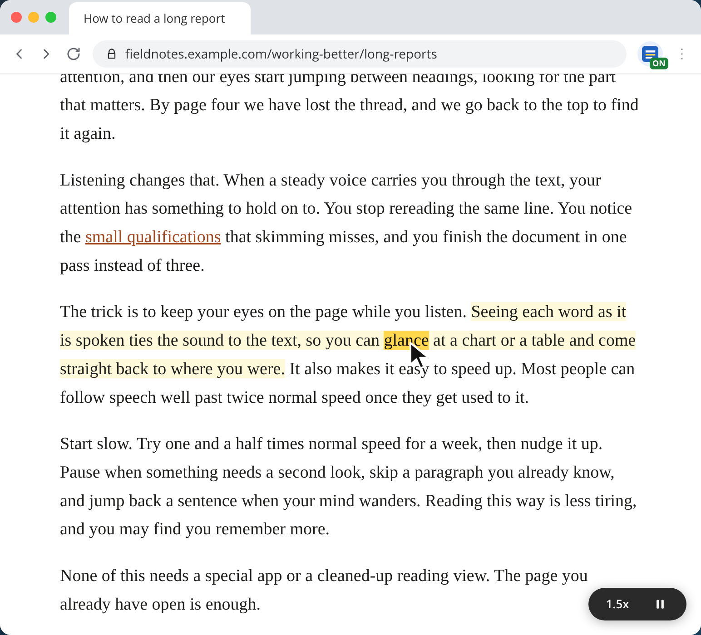
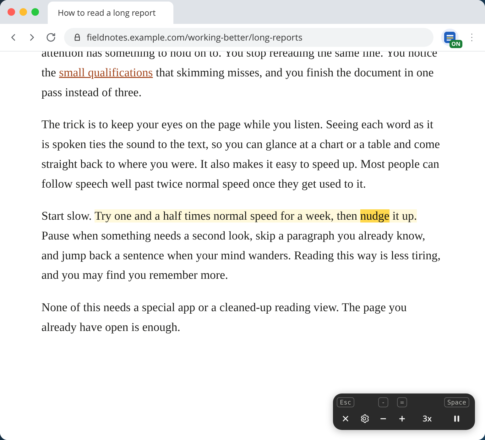
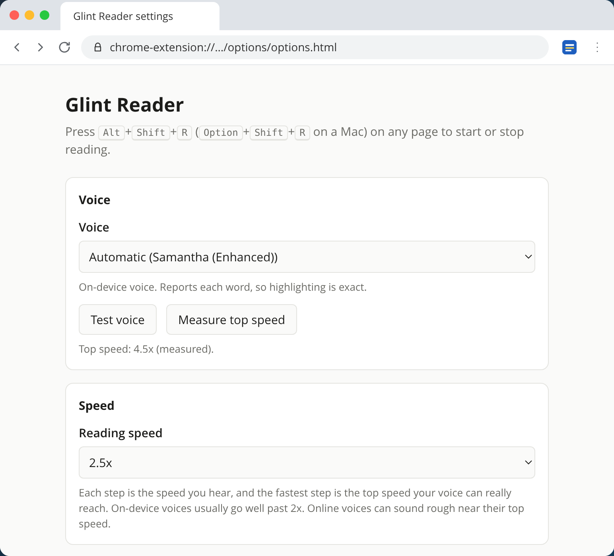

How it works
Three seconds to start listening
Open any page
An article, a report, documentation, or a long email in your browser.
Press Alt+Shift+R
Or click the toolbar icon. On a Mac it's Option+Shift+R. Reading starts at the top of what you can see.
Follow along
Each word lights up as it's spoken. Click any word to jump there. Press the shortcut again to stop.
Click any word to start there
Reading picks up from the word you click, so you can skip the intro or go back to the part you missed. Links still work as links, and Alt+click reads a link instead of opening it.
Select some text before you start, and reading begins there.

Go well past 2x when you're ready
Speed runs from half speed up to the fastest your voice can really go. Voices built into your computer often reach 4x or more. Online voices can sound rough near their top speed.
The pill in the corner shows your speed. Hover it to change speed, open settings, or stop, with each key shown above its button.

Pick a voice and find its top speed
Choose any voice in Chrome or on your computer. Voices that report each word give exact highlighting, and the settings page groups them for you.
One click measures how fast your voice can really go, silently, so the speed steps never promise more than the voice can do. You can choose your own highlight colors too.

Keyboard
Steer without the mouse
Keys work only while it's reading, and never while you're typing in a field.
| Alt + Shift + R | Start or stop on this tab |
| Space | Pause or resume |
| → ← | Next or previous sentence |
| ↓ ↑ | Next or previous paragraph |
| = - | Faster or slower |
| 0 | Back to 1x |
| Esc | Stop |
Privacy
It reads the page. That's all it does.
Nothing collected
No account, no analytics, and no servers. Your settings stay in Chrome.
Only where you start it
The extension can't see a page until you start it on that tab, and it keeps no record of what you read.
On-device voices
Voices built into your computer speak without anything leaving it. Online voices send the spoken text to their provider through Chrome.
Questions
Good to know
Does it change the page?
No. Highlighting paints over the text with Chrome's highlight feature, so the page's layout and content stay exactly as they were. The only thing added is the small pill in the corner.
Which voice should I use?
Pick a voice listed under "On this device, with word highlighting" in the settings. These give exact word tracking and the highest speeds. On a Mac, the Enhanced and Premium voices you can download in System Settings sound best.
Why does it stop at a certain speed?
Each voice has a real top speed, past which it doesn't get any faster. Glint Reader measures it and stops the speed steps there, so the number you see is the speed you hear.
What can't it read?
Chrome's built-in PDF viewer, pages drawn on a canvas such as Google Docs, text inside embedded frames, Chrome's own pages, and the Chrome Web Store. If it can't start, the toolbar icon shows a red !.
Can I change the shortcut?
Yes. Open the settings page and choose "Change the start shortcut", or go to chrome://extensions/shortcuts.
Does it cost anything?
No. It's free, with no account and no upgrade.
Support
Something not working?
Email max@navica.llc with the page you were on and what happened. We read every message.